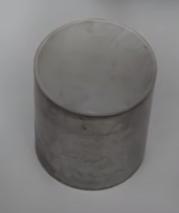

- Step 1: Obtain the specimen of cast iron for analysis.
-
Cutting:
- For large sections, automatic cutting is more efficient than manual cutting.
- For cutting cast irons with graphite, it is recommended to select an aluminum oxide wheel according to the hardness of the cast iron.
- Alloyed white cast irons are very hard and can be difficult to cut, a cubic BN wheel is recommended.

Next